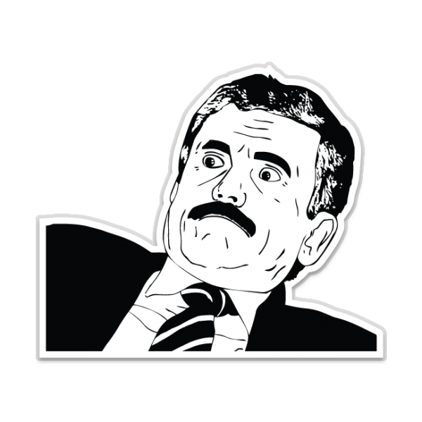

xMeme
Web Application to share memes. Using MERN stack i.e MongoDB, ExpressJs, ReactJs, NodeJs.
Expense Sheet
Android App to keep track of daily transactions.Using Tech Stack: Java, XML.
Vax-Man

VaxMan, covid varient of PacMan.
Side Runner
An endless runner name, using Unreal Engine.
Inventory App
An Inventory app to record product details.
chatApp

A Terminal chat application built in C++ using the concepts of socket programming and multi-threading. It supports chatting among multiple clients.
Hand Tracking
Using Camera to take inputs in form of Hand Gestures. Created a Python Module which detects and tracks hand by identifying and detecting a set of landmarks. Computer vision is an interdisciplinary field that deals with how computers can be made to gain high-level understanding of digital images and videos.